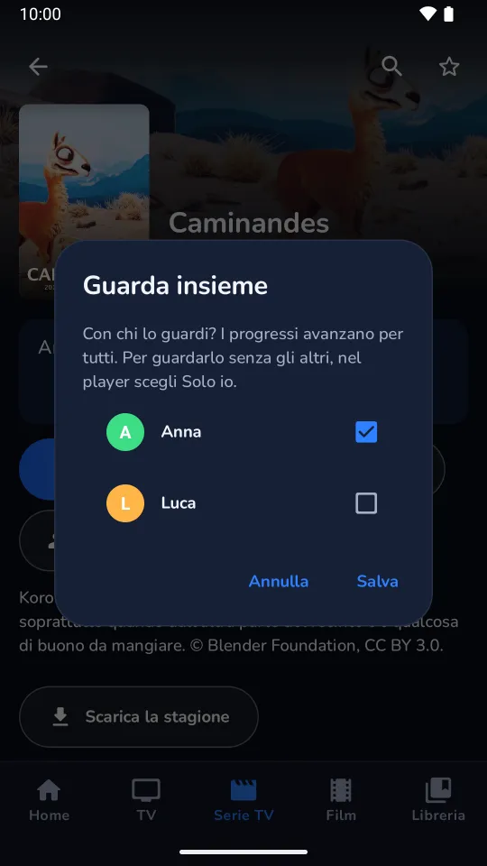

Guida all'usoUser guide
Tutto quello che serve per usare Divano sul telefono e su Android TV, dalla prima playlist alla sincronizzazione tra dispositivi. I nomi dei pulsanti sono quelli che vedi nell'app.
Everything you need to use Divano on your phone and on Android TV, from the first playlist to sync between devices. Button names are the ones you see in the app.
Primi passi
Divano è un lettore: non contiene canali. Ti serve una sorgente tua, cioè un link M3U o un account Xtream del tuo fornitore. Al primo avvio la Home ti accoglie con Aggiungi playlist.
- Tocca Aggiungi playlist. Si apre Aggiungi una sorgente.
- Scegli come inserirla:
- Link: incolla il link della playlist M3U. Se è un link Xtream (anche quello di uno stream), Divano riconosce l'account da solo e importa anche film e serie.
- Login Xtream: server (per esempio
http://esempio.com:8080), nome utente e password. - File: Scegli file M3U per una playlist salvata sul dispositivo.
- Se vuoi, dai un nome alla sorgente, poi tocca Salva e importa.
- Divano scarica canali, film, serie e guida TV. Alla fine vedi Importati … elementi. Buona visione!
Vuoi solo provare? Finché non hai sorgenti, la schermata offre Prova la demo: una playlist con canali inventati, guida TV e film liberi del Blender Foundation. Puoi eliminarla quando vuoi da Impostazioni › Sorgenti.
Le password restano cifrate sul dispositivo e non serve nessun account. Puoi aggiungere più sorgenti: canali, film e serie compaiono insieme.
Getting started
Divano is a player: it comes without channels. You need a source of your own, that is an M3U link or an Xtream account from your provider. On first launch, Home greets you with Add playlist.
- Tap Add playlist. Add a source opens.
- Choose how to enter it:
- Link: paste the M3U playlist link. If it's an Xtream link (even a single stream's), Divano recognises the account and imports movies and series too.
- Xtream login: server (for example
http://example.com:8080), username and password. - File: Choose M3U file for a playlist saved on the device.
- Give the source a name if you like, then tap Save and import.
- Divano downloads channels, movies, series and the TV guide. At the end you see Imported … items. Enjoy!
Just want to try it? Until you have a source, the screen offers Try the demo: a playlist with invented channels, a TV guide and free films by the Blender Foundation. You can delete it any time from Settings › Sources.
Passwords stay encrypted on the device and no account is needed. You can add several sources: their channels, movies and series show up together.
Configurare la TV dal telefono
Scrivere un link lungo con il telecomando è scomodo. Sulla TV, la schermata Aggiungi una sorgente mostra il riquadro Più comodo dal telefono con un codice QR.
- Con il telefono sulla stessa rete Wi-Fi della TV, inquadra il codice con la fotocamera.
- Si apre la pagina Aggiungi una sorgente alla TV: incolla il link, oppure apri Oppure accedi con utente e password Xtream.
- Tocca Invia alla TV. Sulla TV parte l'importazione e puoi chiudere la pagina.

La pagina è servita dalla TV stessa, sulla rete di casa, e si chiude quando esci dalla schermata. Dal telefono non si possono inviare file.
Setting up the TV from your phone
Typing a long link with the remote is no fun. On the TV, the Add a source screen shows the Easier from your phone panel with a QR code.
- With your phone on the same Wi-Fi as the TV, scan the code with the camera.
- The Add a source to your TV page opens: paste the link, or open Or sign in with Xtream username and password.
- Tap Send to TV. The TV starts importing and you can close the page.
The page is served by the TV itself, on your home network, and closes when you leave the screen. Files can't be sent from the phone.
Muoversi nell'app
- Sul telefono la barra in basso porta a Home, TV, Serie TV, Film e Libreria. In cima alla Home trovi Cerca, Impostazioni e i Profili. La Guida TV si apre dalla schermata TV in diretta.
- Sulla TV il menu a sinistra contiene, dall'alto: il profilo in uso, Cerca, Home, TV, Guida TV, Serie TV, Film, Libreria e Impostazioni.
Home raccoglie la registrazione in corso, Continua a guardare (con il prossimo episodio delle serie), i canali visti di recente, i preferiti e i titoli più votati. Su Google TV, Continua a guardare compare anche nella home del sistema.
Libreria ha quattro schede: Preferiti, Da vedere, Visti e Scaricati.
Cerca trova canali, film e serie mentre scrivi, anche con l'inizio delle parole: "film az" trova "Film d'azione". Puoi filtrare per tipo o cercare con la voce.

Finding your way
- On a phone the bottom bar leads to Home, TV, Series, Movies and Library. Search, Settings and Profiles are at the top of Home. The TV guide opens from the Live TV screen.
- On a TV the menu on the left holds, from the top: the current profile, Search, Home, TV, TV guide, Series, Movies, Library and Settings.
Home gathers the recording in progress, Continue watching (with the next episode of your series), recently watched channels, favorites and top rated titles. On Google TV, Continue watching also shows up on the system's home screen.
Library has four tabs: Favourites, To watch, Watched and Downloads.
Search finds channels, movies and series as you type, even from the start of words: "act mov" finds "Action movies". You can filter by type or search by voice.
TV in diretta
La lista dei canali mostra numero, logo e programma in onda. Usa Preferiti e Tutti per passare dai preferiti a tutti i canali, e Filtri per scegliere le categorie.
Il menu di un canale
Tieni premuto su un canale (sulla TV: tieni premuto OK) per:
- Info canale: programmazione di oggi e domani, una breve descrizione da Wikipedia e le Altre versioni dello stesso canale.
- Aggiungi ai preferiti o Rimuovi dai preferiti.
- Rinomina: lascia vuoto per tornare al nome del fornitore.
- Nascondi canale: lo ritrovi in Impostazioni › Elementi nascosti.
Nel player
- In basso vedi cosa va in onda, quando finisce e cosa viene dopo.
- Audio e sottotitoli sceglie la traccia audio e i sottotitoli.
- Sul telecomando: tasti numerici per il numero del canale, CH+ e CH− per cambiare, il tasto dell'ultimo canale per tornare indietro.
- Modalità zapping: mentre è attiva, quello che guardi non finisce nella cronologia.
Se un canale non risponde, Divano passa da solo a un'altra copia dello stesso canale, anche di un'altra sorgente, e te lo dice: Questo stream non funziona, passo a …

Live TV
The channel list shows number, logo and what's on. Use Favorites and All to switch between your favorites and every channel, and Filters to pick categories.
A channel's menu
Long-press a channel (on a TV: hold OK) for:
- Channel info: today's and tomorrow's schedule, a short description from Wikipedia and the Other versions of the same channel.
- Add to favorites or Remove from favorites.
- Rename: leave it empty to go back to the provider's name.
- Hide channel: you'll find it again in Settings › Hidden items.
In the player
- At the bottom you see what's on, when it ends and what's next.
- Audio and subtitles picks the audio track and subtitles.
- On the remote: number keys for the channel number, CH+ and CH− to switch, the last-channel key to go back.
- Zapping mode: while it's on, what you watch stays out of your history.
When a channel doesn't answer, Divano switches by itself to another copy of the same channel, even from another source, and tells you: This stream isn't working: switched to …
Guida TV, replay e promemoria
La Guida TV è una griglia di canali e orari. Gli account Xtream la portano con sé; le playlist M3U spesso la annunciano nell'intestazione. Altrimenti aggiungi il link XMLTV in Impostazioni › Sorgenti › Guida TV.
- Un programma in onda: lo selezioni e guardi il canale.
- Un programma passato: parte il replay, se la sorgente conserva l'archivio di quel canale. Nella scheda del canale vedi per quanti giorni (Replay 3 giorni). Nel player, Dall'inizio riavvolge il programma in corso.
- Un programma futuro: scegli Ricordamelo. Pochi minuti prima arriva una notifica, Sta per iniziare; toccala per guardare. Su Android 13 e successivi l'app chiede il permesso per le notifiche.

TV guide, replay and reminders
The TV guide is a grid of channels and times. Xtream accounts bring their own; M3U playlists often announce it in their header. Otherwise add the XMLTV link in Settings › Sources › TV guide.
- A programme on air: select it and watch the channel.
- A past programme: replay starts, if your source keeps an archive for that channel. The channel page tells you how many days (Replay 3 days). In the player, Start over rewinds the programme on air.
- A future programme: choose Remind me. A few minutes before it starts you get a notification, Starting soon; tap it to watch. On Android 13 and later the app asks for permission to send notifications.
Mettere in pausa la diretta
Premi pausa su un canale: Divano inizia a registrarlo sul dispositivo e, quando riprendi, riparte da dove eri.
- La registrazione continua anche se cambi canale o chiudi l'app, fino alla fine del programma più mezz'ora (tre ore se il canale non ha guida). La ritrovi in Home, nella riga Registrazione, con Interrompi ed Elimina.
- Arrivato alla fine della registrazione torni in diretta; Diretta ci torna subito.
- Si registra un canale alla volta: mettendone in pausa un altro, Divano chiede se sostituire la registrazione.
- Usa al massimo un terzo dello spazio libero, fino a 8 GB.
La registrazione su disco funziona con i flussi MPEG-TS e HLS più comuni. Con gli altri (per esempio multicast udp/rtp, o HLS con tracce audio separate) la pausa resta in memoria e dura meno.
Pausing live TV
Press pause on a channel: Divano starts recording it on the device and, when you resume, picks up where you were.
- The recording carries on even if you change channel or close the app, until the end of the programme plus half an hour (three hours when the channel has no guide). You'll find it on Home, in the Recording row, with Stop and Delete.
- When you reach the end of the recording you're back live; Live takes you there right away.
- One channel records at a time: pausing another one, Divano asks whether to replace the recording.
- It uses at most a third of the free space, up to 8 GB.
Recording to disk works with the most common MPEG-TS and HLS streams. With others (for example udp/rtp multicast, or HLS with separate audio tracks) the pause stays in memory and lasts less.
Film e serie
La scheda di un film o di una serie mostra trama, anno, genere, regia e cast quando la sorgente li fornisce.
- Riproduci, oppure Riprendi da … se l'avevi iniziato.
- Da vedere lo mette da parte nella Libreria.
- Altre versioni: se la sorgente ha lo stesso titolo più volte (lingue, qualità), Divano li raggruppa e ti fa scegliere; segna la versione consigliata e l'ultima vista.
- Il trailer si apre su YouTube, se il fornitore lo indica.
Nelle serie, a fine episodio parte il conto alla rovescia del Prossimo episodio (Guarda ora o Annulla). Tieni premuto un episodio per Segna come visto o Segna come non visto; quelli visti hanno la spunta verde.

Movies and series
A movie or series page shows plot, year, genre, director and cast when your source provides them.
- Play, or Resume from … if you had started it.
- To watch puts it aside in your Library.
- Other versions: when your source has the same title several times (languages, quality), Divano groups them and lets you choose; it marks the recommended version and the last one watched.
- The trailer opens on YouTube, when the provider gives one.
In a series, the Next episode countdown starts at the end of an episode (Play now or Cancel). Long-press an episode for Mark as watched or Mark as unwatched; watched ones get a green check.
Download per guardare offline
- Nella scheda di un film tocca Scarica; in una serie, Scarica la stagione o Scarica l'episodio.
- Il download continua anche in background, con una notifica che mostra l'avanzamento.
- Ritrovi tutto in Libreria › Scaricati, con lo spazio occupato.
In Scaricati c'è anche Scarica solo con Wi-Fi: con l'interruttore acceso, i download aspettano il Wi-Fi o la rete via cavo invece di usare i dati mobili.
Downloads to watch offline
- On a movie page tap Download; in a series, Download season or Download episode.
- The download carries on in the background, with a notification showing its progress.
- You'll find everything in Library › Downloads, with the space it takes.
Downloads also has Download on Wi-Fi only: with the switch on, downloads wait for Wi-Fi or Ethernet instead of using mobile data.
Profili e "Guarda insieme"
Ogni profilo ha i suoi preferiti, la sua lista Da vedere, la cronologia, gli elementi nascosti e i promemoria. Le sorgenti e le impostazioni sono in comune.
- Apri i profili: sul telefono dall'icona in cima alla Home, sulla TV dal profilo in cima al menu. Compare Chi guarda?: tocca un profilo per passare a quello.
- Aggiungi crea un profilo nuovo: scegli nome e colore.
- Gestisci profili ti fa scegliere quale modificare, per cambiarne nome e colore o eliminarlo. Il primo profilo si chiama Principale; puoi rinominarlo come gli altri.

Guardare una serie insieme
Con almeno due profili, la scheda di una serie o di un film mostra Guarda insieme.
- Tocca Guarda insieme e spunta chi la guarda con te, poi Salva. Il pulsante diventa Insieme a …
- Da quel momento i progressi avanzano per tutti: l'episodio che finisci risulta visto anche per gli altri.
- Se qualcuno è andato avanti da solo, la scheda lo dice, per esempio Anna è avanti di 1 episodio: Vai a S1 E3 ti porta al suo punto, Resta qui lascia le cose come sono.
- Una sera guardi da solo? Nel player scegli Solo io: i progressi degli altri non cambiano. Vale finché non chiudi l'app.


Profiles and "Watch together"
Each profile has its own favorites, To watch list, history, hidden items and reminders. Sources and settings are shared.
- Open profiles: on a phone from the icon at the top of Home, on a TV from the profile at the top of the menu. Who's watching? appears: tap a profile to switch to it.
- Add creates a new profile: pick a name and a colour.
- Manage profiles lets you pick one to edit, to change its name and colour or delete it. The first profile is called Main; you can rename it like the others.
Watching a series together
With at least two profiles, a series or movie page shows Watch together.
- Tap Watch together, tick who watches it with you, then Save. The button becomes Together with …
- From then on progress moves on for all of you: an episode you finish is watched for the others too.
- If someone went ahead on their own, the page says so, for example Anna is 1 episode ahead: Go to S1 E3 takes you where they are, Stay here leaves things as they are.
- Watching alone one evening? Choose Just me in the player: the others' progress stays as it is. It lasts until you close the app.
Controllo parentale, categorie ed elementi nascosti
- Impostazioni › Controllo parentale › Imposta un PIN (da 4 a 8 cifre).
- Le categorie per adulti si bloccano da sole, anche quelle che arrivano con gli aggiornamenti della sorgente.
- In Impostazioni › Categorie scegli per ogni categoria di TV, film e serie se è Visibile e se è Bloccata.
Le categorie bloccate spariscono da liste, ricerca e Home finché non inserisci il PIN. Sblocca le mostra fino a quando premi Blocca ora o chiudi l'app. Su Google TV i titoli bloccati restano fuori da Continua a guardare.
Canali e titoli nascosti dal loro menu si ritrovano in Impostazioni › Elementi nascosti, con Mostra di nuovo.
Parental control, categories and hidden items
- Settings › Parental control › Set a PIN (4 to 8 digits).
- Adult categories lock by themselves, including those that arrive with later source updates.
- In Settings › Categories choose, for each TV, movie and series category, whether it's Visible and whether it's Locked.
Locked categories disappear from lists, search and Home until you enter the PIN. Unlock shows them until you press Lock now or close the app. On Google TV, locked titles stay out of Continue watching.
Channels and titles hidden from their menu are in Settings › Hidden items, with Show again.
Sincronizzazione tra dispositivi
Telefono e TV possono condividere profili, sorgenti (con le password), preferiti, lista Da vedere, progressi, elementi nascosti, canali rinominati, blocchi delle categorie e promemoria. Tutto è cifrato sui tuoi dispositivi con una chiave che il server non riceve mai.
- Sul telefono: Impostazioni › Sincronizzazione › Inizia qui.
- Sulla TV: Impostazioni › Sincronizzazione › Collega a un altro dispositivo. La TV mostra un codice QR e aspetta. Su una TV appena installata trovi lo stesso pulsante nella Home vuota: Sincronizza da un altro dispositivo.
- Sul telefono tocca Aggiungi dispositivo, consenti la fotocamera e inquadra il codice sulla TV.
- Il telefono chiede Aggiungere …?: tocca Aggiungi. La TV dice chi l'ha fatta entrare e inizia a ricevere i dati.
Una TV non ha fotocamera: si collega sempre facendo inquadrare il suo codice da un telefono che sincronizza già. Il codice scade dopo 10 minuti. Se sulla TV compare un collegamento che non hai fatto tu, scegli Non sono stato io.
Quando è attiva, la stessa schermata mostra l'ora dell'ultima sincronizzazione, Sincronizza ora e l'elenco dei Dispositivi: Rimuovi ne scollega uno subito. Disattiva la sincronizzazione lascia i dati dove sono.
Usare un altro server
Prima di iniziare puoi cambiare il campo Server, su tutti i dispositivi allo stesso modo. Serve un indirizzo https://; http:// è accettato solo per un server sulla rete di casa. Se il server accetta solo famiglie invitate, compare Password del server. Per crearne uno, vedi Server di sincronizzazione.
Sync between devices
Phone and TV can share profiles, sources (with their passwords), favorites, the To watch list, progress, hidden items, renamed channels, category locks and reminders. Everything is encrypted on your devices with a key the server never receives.
- On the phone: Settings › Sync › Start here.
- On the TV: Settings › Sync › Join another device. The TV shows a QR code and waits. On a freshly installed TV the same button is on the empty Home: Sync from another device.
- On the phone tap Add a device, allow the camera and scan the code on the TV.
- The phone asks Add …?: tap Add. The TV says who let it in and starts receiving your data.
A TV has no camera: it always joins by having its code scanned by a phone that already syncs. The code expires after 10 minutes. If the TV shows a link you didn't make, choose That wasn't me.
Once on, the same screen shows when the last sync happened, Sync now and the list of Devices: Remove cuts one off right away. Stop syncing leaves your data where it is.
Using another server
Before you start you can change the Server field, the same way on every device. It needs an https:// address; http:// is only accepted for a server on your home network. If the server only takes invited households, Server password appears. To run one, see Sync server.
Gestire le sorgenti
In Impostazioni › Sorgenti ogni sorgente mostra il tipo, la scadenza dell'abbonamento e il numero di connessioni (per Xtream) e quando è stata aggiornata. Per ognuna:
- Aggiorna scarica di nuovo canali, film e serie. Divano lo fa anche da solo all'avvio, se l'ultimo aggiornamento ha più di un giorno (la guida TV più di 12 ore).
- Guida TV imposta il link XMLTV (
.xmlo.xml.gz); lascialo vuoto per disattivare la guida. - Elimina toglie la sorgente con i suoi canali, film, serie, preferiti e cronologia.
Aggiungi sorgente ne aggiunge un'altra.
Managing sources
In Settings › Sources each source shows its type, the subscription's expiry and number of connections (for Xtream) and when it was last updated. For each one:
- Refresh downloads channels, movies and series again. Divano also does it by itself at startup when the last update is more than a day old (the TV guide, more than 12 hours).
- TV guide sets the XMLTV link (
.xmlor.xml.gz); leave it empty to turn the guide off. - Delete removes the source with its channels, movies, series, favorites and history.
Add source adds another one.
Backup e ripristino
Impostazioni › Backup e ripristino: Salva backup crea un file con le sorgenti, i canali rinominati e ogni profilo con preferiti, lista Da vedere, cronologia ed elementi nascosti. Ripristina da file lo ricarica, anche su un altro dispositivo, e reimporta le sorgenti.
Il file contiene le password delle sorgenti in chiaro: conservalo in un posto sicuro. Il PIN del controllo parentale non è incluso.
Backup and restore
Settings › Backup and restore: Save backup creates a file with your sources, renamed channels and every profile with its favorites, To watch list, history and hidden items. Restore from file loads it back, on another device too, and imports the sources again.
The file holds your source passwords in plain text: keep it somewhere safe. The parental PIN is not included.
Se qualcosa non va
| Messaggio | Cosa fare |
|---|---|
| Nome utente o password errati. | Controlla i dati che ti ha dato il fornitore. |
| L'abbonamento è scaduto. | Rinnovalo presso il fornitore, poi Aggiorna la sorgente. |
| Questo server non risponde come un pannello Xtream. | Usa il link M3U invece del login Xtream. |
| Questo link non porta a una playlist M3U. | Il link è sbagliato o scaduto: chiedine uno nuovo al fornitore. |
| Ancora nessuna guida TV | Aggiungi il link XMLTV in Impostazioni › Sorgenti › Guida TV. |
| Accesso negato (HTTP 403). | L'abbonamento potrebbe essere scaduto o già in uso su un altro dispositivo. |
| Questo dispositivo non riesce a decodificare l'audio o il video dello stream. | Il formato del flusso non è supportato da questo dispositivo: prova un'altra versione del canale o del titolo. |
Per tutto il resto scrivi a app+divano@dambox.ch. Divano non vende né fornisce abbonamenti: per i contenuti rivolgiti al tuo fornitore.
When something's wrong
| Message | What to do |
|---|---|
| Wrong username or password. | Check the details your provider gave you. |
| This subscription has expired. | Renew it with your provider, then Refresh the source. |
| This server doesn't answer like an Xtream panel. | Use the M3U link instead of the Xtream login. |
| This link doesn't point to an M3U playlist. | The link is wrong or expired: ask your provider for a new one. |
| No TV guide yet | Add the XMLTV link in Settings › Sources › TV guide. |
| Access denied (HTTP 403). | The account may be expired or already in use on another device. |
| This device can't decode this stream's audio or video. | This device doesn't support the stream's format: try another version of the channel or title. |
For anything else write to app+divano@dambox.ch. Divano doesn't sell or provide subscriptions: for content, ask your provider.